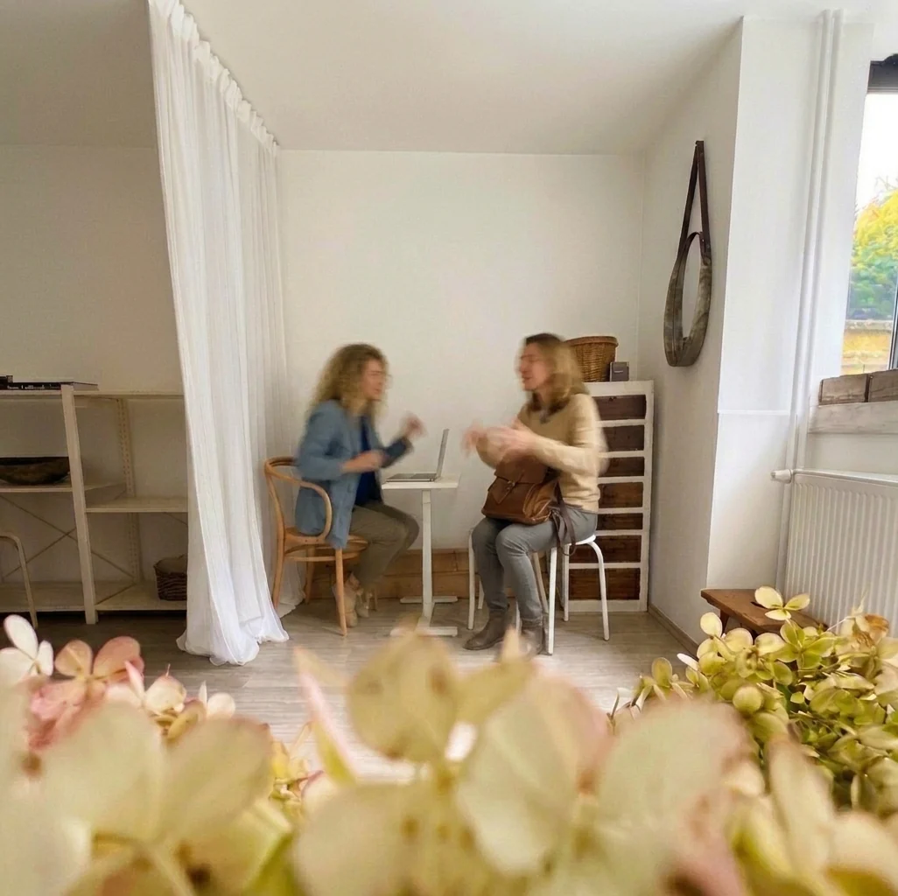

Zwei Websites, eine Markenidentität und zwei Markenshootings. Schauen Sie sich gern um.
Eigene Marke · Redesign, Logo, Foto und Video
Familienfotos, die Eltern nicht nur bewundern, sondern buchen
Ausgangslage: ein schönes Portfolio, das Eltern bewundert, aber kaum gebucht haben. Lösung: Ich habe Struktur, Texte und Bildauswahl neu aufgebaut, rund um die Fragen, die Eltern wirklich beschäftigen. So fühlen sie sich sicher genug, sich zu melden.
Ausgangslage: ein erfahrener Installateur, dessen Webauftritt nicht gezeigt hat, wie gut er arbeitet. Lösung: alles aus einer Hand. Logo, Website, Texte und Fotos, die das Angebot klar erklären und den Anruf leicht machen.
Ausgangslage: Sonnentor wollte Fotos von einem seiner Lieferhöfe, doch am Tag des Shootings waren die Kräuter schon verblüht. Lösung: Ich habe stattdessen die Menschen fotografiert: ihre Werkstatt, ihre Tiere und wie sehr sie füreinander da sind.
Ausgangslage: Online sehen alle Blumen gleich aus, und der Name der Marke war unbekannt. Lösung: ein O, das man wie eine sich öffnende Rose von oben sieht, dazu Farben, Schriften und eine Verpackung, die man fast spüren kann.
Ausgangslage: Kleidung, die für Bewegung und Lebensfreude gemacht ist, wirkt auf steifen, gestellten Produktfotos flach. Lösung: Ich habe die Frauen gehen, tanzen und lachen lassen und dazu Detailaufnahmen und kurze Videos gemacht.
Ich bin Inna. Ich sorge dafür, dass Unternehmen nach außen so gut wirken, wie sie wirklich sind.
Seit 12 Jahren führe ich meine eigene Fotomarke innaguba.com. Website, Texte und Fotos stammen von mir, und über sie findet mich bis heute meine Kundschaft. Die Fotografie hat mich Geduld und einen Blick fürs Detail gelehrt, und mit derselben Sorgfalt arbeite ich an Ihrer Marke.
Konkret heißt das: Website, Logo und Fotos, die klar zeigen, was Sie können, auf den ersten Blick Vertrauen wecken und es der richtigen Kundschaft leicht machen, sich bei Ihnen zu melden. Und wenn später etwas zu ändern ist, wissen Sie genau, wen Sie fragen.
Eine neue Website oder ein Redesign der bestehenden: Struktur, Texte, Design und Umsetzung. Damit sofort klar ist, was Sie anbieten, und mehr Anfragen kommen.
ab € 1.490
Marke und Grafik
Logo, Farben, Schriften und alles, was darauf aufbaut: Präsentationen, Drucksorten und Grafiken für Social Media.
ab € 690
Foto, Video und Content
Fotos und Videos von Ihnen, Ihrem Team und Ihrer Arbeit sowie Content für Social Media: Reels, Posts und Stories.
ab € 690
Ein Fixpreis, vereinbart vor dem Start.
Ablauf
Von der ersten Skizze bis zur Marke, die in Erinnerung bleibt.

Jedes Projekt beginnt mit einem Gespräch, in meinem Atelier oder bei Ihnen vor Ort.
1. KennenlernenErzählen Sie mir von Ihrem Unternehmen und davon, was Sie brauchen. Ich antworte innerhalb von zwei Werktagen.Sie bekommen einen klaren Plan und einen Fixpreis.
2. Design und UmsetzungStruktur, Texte, Fotos und Design, abgestimmt auf Ihre Kundschaft. Zu vereinbarten Terminen sehen Sie Zwischenstände und geben Feedback.Keine Überraschungen am Ende.
3. ÜbergabeIch prüfe jedes Detail, dann geht Ihre Website online und Sie bekommen alle Dateien.Alles ist einsatzbereit und gehört ganz Ihnen.
4. BetreuungNach der Übergabe bin ich weiter für Sie da: Updates, kleine Änderungen und Rat, wann immer Sie ihn brauchen.Sie haben jemanden, der Ihre Website in- und auswendig kennt.
Kundenstimmen
„Sie hat ein unglaubliches Auge fürs Detail, und ihre Arbeit hat unsere Erwartungen übertroffen.“
Dominika Grmelová · Google-Bewertung
★★★★★ 5,0 auf Google · 21 Bewertungen aus der Fotografie, aus dem Tschechischen übersetzt · Alle Bewertungen lesen
Fragen
Was können Sie für mein Unternehmen tun?
Alles, was Ihr Auftritt online braucht: eine Website, ein Logo mit Erscheinungsbild und Fotos, Videos und Beiträge für Social Media. Alles aus einer Hand, damit es zusammenpasst.
Wo arbeiten Sie?
Mit Unternehmen in ganz Österreich und Tschechien, von Wien und Niederösterreich bis Brünn und Prag. Website und Branding laufen ganz online, für Foto- und Videoshootings komme ich zu Ihnen.
Was kostet das?
Sie bekommen vor dem Start einen Fixpreis, abgestimmt auf das, was Sie brauchen. Keine versteckten Kosten.
Wie lange dauert das?
Eine Website dauert meist 4–6 Wochen, ein Logo, ein Fotoshooting oder ein Video 2–3 Wochen. Den Zeitplan bekommen Sie gleich zu Beginn.
In welcher Sprache arbeiten wir?
Wir kommunizieren auf Englisch, am liebsten schriftlich, so ist alles klar festgehalten. Die deutschen Texte für Ihre Website lasse ich muttersprachlich prüfen.